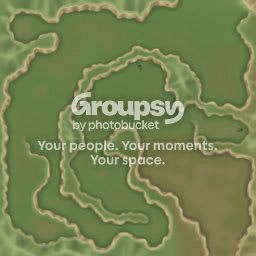

หน้า 1 จากทั้งหมด 1
อยากทราบเกี่ยวกับรายละเอียดของดันช้างหน่อยครับ

โพสต์แล้ว:
ศุกร์ 29 ต.ค. 2010 9:04 amโดย ECO
อยากไปดันช้าง ไปยังไงครับ ที่ต้องมีวัว Momo เป็นสัตว์เลี้ยงด้วยนะครับ แล้วมอนในmapนั้นโหดแค่ไหน อยากลองไปเสี่ยงดูหน่อย ใครรู้ช่วยบอกทีครับ
Re: อยากทราบเกี่ยวกับรายละเอียดของดันช้างหน่อยครับ
โพสต์แล้ว:
ศุกร์ 29 ต.ค. 2010 10:24 amโดย ECO
DoomDoom
Level : 90
HP : 1,200,000
EXP / Job EXP : 180,000 / 225,000
Attribute : รูปภาพ
Personality : Non Active
Map : [Poison Wet Land{แลมีแต่ช้าง}]

Item : Silver Medal[PT]/ Fighter Box / Spell User Box / Backpacker Box / Weapon Box
เวลาเกิด : 6ชั่วโมง
Skill : MegaDark Blaza / Absolute Terror / Esse Resl Body / Dark Elephant Call
summon ลูกบอสทั้งหมด : Dark Elephant 8ตัว
อื่นๆ : เมื่อ Dark Elephant หมด จะทำการsummon Dark Elephant มาใหม่ 8 ตัว
Credit : freedom?

จะเข้าไปล่าบอส DoomDoom ต้องติดตั้งวัวน้อย Momo ด้วยค่ะ
ซึ่งสามารถใช้ได้ทั้งวัวน้อย Momo ที่ได้มาจากการทำเควส และ วัวน้อย Momo ที่มีขายใน Eco Shop ค่ะ
Credit : [GM]เป๊ปเป้
คุยกับ npc ที่เป็นลุงอ่านะครับจำชื่อไม่ได้ในแมพนั้น
Re: อยากทราบเกี่ยวกับรายละเอียดของดันช้างหน่อยครับ
โพสต์แล้ว:
ศุกร์ 29 ต.ค. 2010 11:31 amโดย ECO
แล้วมอนอื่นละครับ มีมอนไรบ้าง ว่าจะลองไปซักหน่อยเห็นในริงบอกว่า เวลได้ดีเหมือนกัน
Re: อยากทราบเกี่ยวกับรายละเอียดของดันช้างหน่อยครับ
โพสต์แล้ว:
ศุกร์ 29 ต.ค. 2010 11:52 amโดย ECO
ในแมพนั้นก็จะมีลูกมันแค่นั้นล่ะครับ
Re: อยากทราบเกี่ยวกับรายละเอียดของดันช้างหน่อยครับ
โพสต์แล้ว:
อังคาร 16 พ.ย. 2010 1:45 pmโดย ECO
ไปลองของต้องไปลอง
ไม่โหดอย่างที่คิด ฮ่าๆ

Re: อยากทราบเกี่ยวกับรายละเอียดของดันช้างหน่อยครับ
โพสต์แล้ว:
พฤหัสฯ. 18 พ.ย. 2010 1:25 amโดย ECO
momo หรอนึกว่าก้านกล้วย